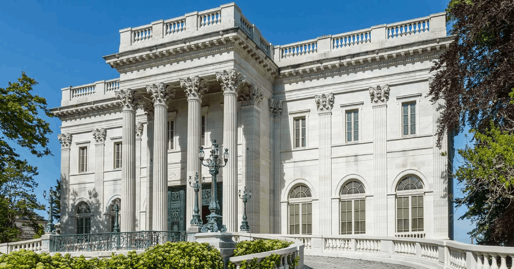
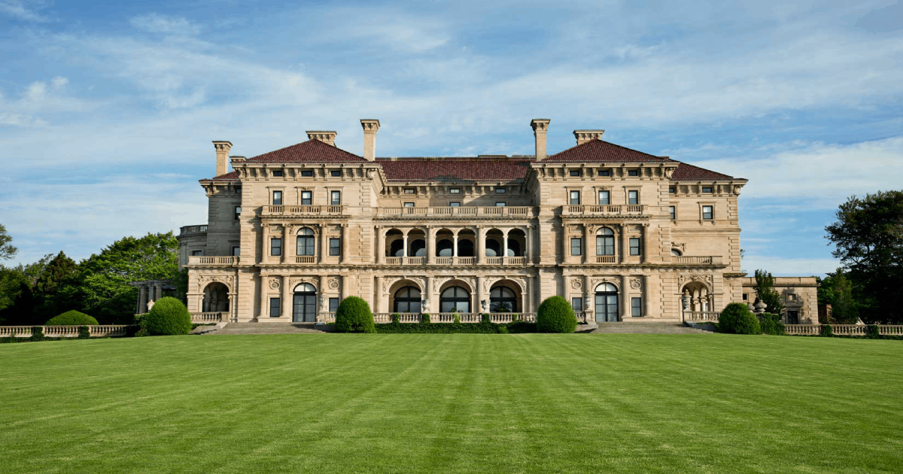
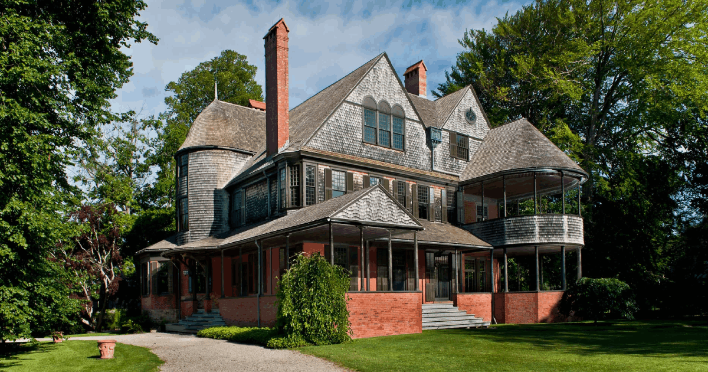
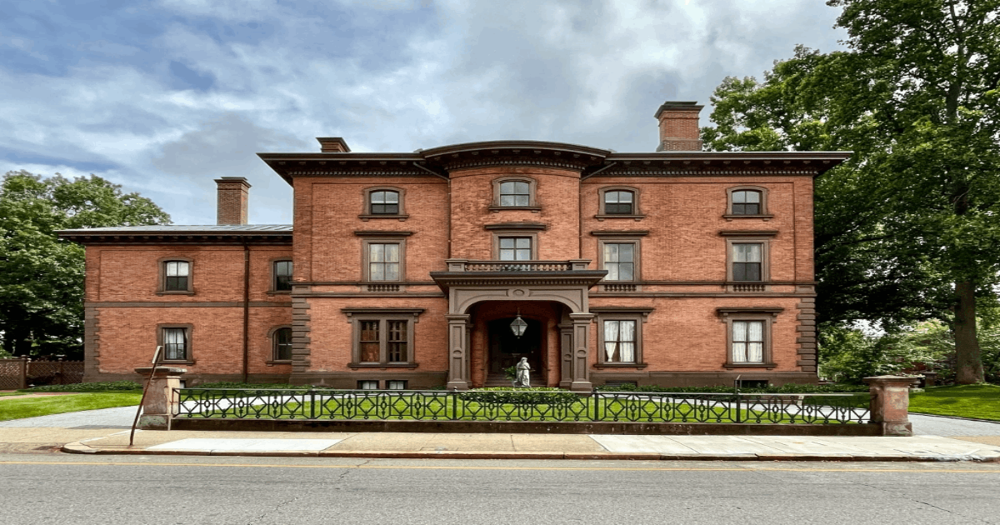

Historical Landmarks
Marble House
Located in Newport at 596 Bellevue Ave. The Marble House is composed of 500,000 cubic feet of marble when it was built by the architect, Richard Morris Hunt, in 1888. It was mainly used as a summer cottage for the Vanderbilt family costing around 11 million dollars where most of it was due to the marble. The wealth of the Vanderbilt family originates from the manufacturing of steam ships and the New York Central Railroad. The house was unlike any other house during its time where instead of wood it was made out of marble. Its considered a historical landmark due to how it sparked a change in Newport's buildings from old wooden houses to beautiful stone palaces.
The Breakers
Located in Newport at 44 Ochre Point Ave. The Breakers is composed of lime, brick, and steel. Owned by Cornelius Vanderbilt II who was considered as one of the richest men in America at the time. It was built in 1893 during the Gilded Age by the architect, Richard Morris Hunt, where it was to replace a wooden house that had burned down. The building itself was inspired by the style of buildings during the Italian Renaissance and open court yards. The mansion had 70 rooms that included 48 bedrooms for staf and family. It was purchased by the Preservation Society in 1972 from Cornelius' grand children.
Issac Bell House
Located in Newport at 70 Perry Street.The house was made by the firm of Mckim, Mead and White, where its design depicts the search for an American Architecture. Its designs followed the shingle style making use of shingle wood for the walls of the building. The house at the time seemed modern with porches and wide gables. The Issac Bell House was made in 1883 for Issac Bell, a rich cotton broker and investor.
Lippitt House Museum
Located in Providence at 199 Hope St. The Lippit House Museum is Victorian-era styled home designed by architect, Russell Warren. It was later modified by Henry Lippit, the heir to one of Rhode Island's leading Textile manufacturing families at the time. It served to be home for Henry and his wife and six children. The mansion remained with the Lippit family for over a hundred years until it was acquired by Preserve Rhode Island and used as a museum in 1993.